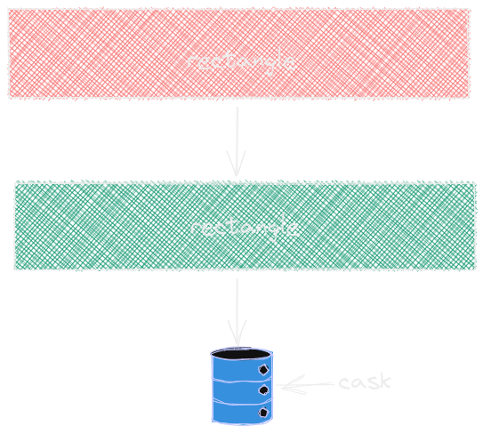
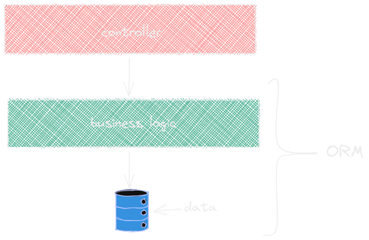

<!doctype html>
<html>
	<head>
		<meta charset="utf-8">
		<meta name="viewport" content="width=device-width, initial-scale=1.0, maximum-scale=1.0, user-scalable=no">

		<title>To JPA or not - revisited</title>

		<link rel="stylesheet" href="dist/reset.css">
		<link rel="stylesheet" href="dist/reveal.css">
		<link rel="stylesheet" href="dist/theme/night.css">
		<link rel="stylesheet" href="css/custom.css">

		<!-- Theme used for syntax highlighted code -->
		<link rel="stylesheet" href="plugin/highlight/monokai.css">
	</head>
	<body>
		<div class="reveal">
			<div class="slides">
				<section data-markdown data-separator-vertical="^--$">
					<script type="text/template">
						# to JPA or not to JPA
						#### a rant on persistence techniques in hexagonal architecture<!-- .element: class="pink"-->

						Maciej Małecki, 2022<!-- .element: class="cyan"-->

						---

						## who am I?
						<!-- .slide: class="hide-ticks rainbow"-->

						<div class="r-hstack gap-1">
							
							<ul>
								<li>coder since 1990 (BASIC & 6502 Assembly)</li>
								<li>professional dev since 2001</li>
								<li>software architect since 2005</li>
							</ul>
						</div>

						--

						### Mentimeter #1

						## what do you expect from this session?<!-- .element: class="cyan"-->

						--

						### Mentimeter #2

						## what is your current position in the project?<!-- .element: class="cyan"-->

						---

						#### why does the code decompose?

						

						<div class="source"><p>&copy; mietok - dolny.slask.org.pl (<a href="https://polska-org.pl/900451,foto.html?idEntity=3674117">link</a>)</p></div>

						--

						## reasons

						<!-- .slide: class="hide-ticks"-->

						<div class="r-hstack gap-1">
							<ul>
								<li>deadlines</li>
								<li>hacking</li>
								<li>lack of competence</li>
								<li class="fragment pink" data-fragment-index="1">architecture should help but...</li>
							</ul>
							
						</div>

						--

						### Mentimeter #3

						## how do you choose an architecture for a new project?<!-- .element: class="cyan"-->

						--

						<!-- .slide: class="rainbow"-->

						<div class="r-hstack gap-1">
							
							<ul class="fragment">
								<li>automated</li>
								<li>saves money</li>
								<li>standard</li>
								<li>storage technology decoupling</li>
							</ul>
						</div>

						Who of you have ever consider not using ORM?<!-- .element: class="fragment"-->

						--

						### Mentimeter #4

						## what is the most exotic persistence tool you ever used?<!-- .element: class="cyan"-->

						---

						## history
						### relational data bases

						* proposed by Codd in 1970
						* backed with solid math theory
						* solves most of the problems with earlier DB models
						* universal solution widely applicable
						* first Oracle implementation 1979
						* became modelling standard in 80ties and 90ties

						--

						## history
						### object oriented paradigm

						* first language: Simula, 60ties
						* Smalltalk 1970
						* mid 80ties: Objective C, C++
						* Pascal, ADA, BASIC, COBOL<!-- .element: class="fragment"-->
						* 90ties - OOP became a dominant programming paradigm<!-- .element: class="fragment"-->

						--

						# FACT
						## OOP and RD does not fit

						--

						#### Object relational impedance mismatch

						

						Ted Neward, 2006

						http://blogs.tedneward.com/post/the-vietnam-of-computer-science

						<div class="source"><p>&copy; www.newardassociates.com (<a href="http://www.newardassociates.com">link</a>)</p></div>

						--

						* Object to table mapping problem (i.e. inheritance, associations)
						* The schema-ownership problem (DBA vs DEV)<!-- .element: class="fragment"-->
						* The dual-schema problem<!-- .element: class="fragment"-->
						* The data retrieval mechanism concern (HQL, JPQL, Query DSL, ...)<!-- .element: class="fragment"-->
						* The partial-object problem and (NULLs)<!-- .element: class="fragment"-->
						* ... load-time paradox ($N+1$)<!-- .element: class="fragment"-->
						* Entity identity issues<!-- .element: class="fragment"-->
						* Implicit updates<!-- .element: class="pink fragment"-->

						--

						#### Entity identity issues

						```java[|3-5|7-9|11-13|18-20|24-26]
						@Entity
						public class Customer {
							@Id
							@Generated
							Long id;

							public boolean equals(Object other) {
								return this.id == (Customer) other.id; // id == null???
							}

							public int hashCode() {
								return id.hashCode(); // id == null???
							}
						}

						...

						customer = new Customer();
						customerSet.add(customer);
						entityManager.persist(customer);

						...

						public int hashCode() {
							return 1;
						}

						```

						--

						### we fool ourselves

						

						ORM is a leaking abstraction and underlying persistence mechanism cannot be ignored<!-- .element: class="cyan fragment"-->

						---

						#### architecture
						# can we do it

						better?<!-- .element class="r-fit-text"-->

						--

						## hexagonal

						

						--

						## dependencies

						

						--

						### data access adapter

						how to implement it?<!-- .element: class="pink"-->

						<!-- .element: class="fragment" data-fragment-index="1"-->

						*inversion of control<!-- .element: class="fragment cyan" data-fragment-index="1"-->

						---

						# JPA

						shared model or two models?<!-- .element: class="cyan r-fit-text"-->

						--

						### two models

						

						<!-- .slide: class="hide-ticks rainbow"-->
						* extra mapping & more work
						* BUT: clean domain objects<!-- .element: class="fragment" data-fragment-index="1"-->
						* BUT: rich domain objects<!-- .element: class="fragment" data-fragment-index="1"-->
						* BUT: do DDD freely<!-- .element: class="fragment" data-fragment-index="1"-->

						--

						### how to map?

						<!-- .slide: class="hide-ticks rainbow"-->
						* manually
						* or use Mapstruct, but...<!-- .element: class="fragment"-->
						* don't overdose<!-- .element: class="fragment"-->
						* and know when to stop<!-- .element: class="fragment"-->

						--

						### shared model

						<!-- .slide: class="hide-ticks rainbow"-->

						

						* simplicity
						* no mappers
						* BUT: tight coupling with tech<!-- .element: class="fragment" data-fragment-index="1"-->
						* BUT: how about proxies?<!-- .element: class="fragment" data-fragment-index="1"-->

						---

						why to use JPA at all?

						## alternatives

						--

						<!-- .slide: class="hide-ticks rainbow"-->
						## in Java world

						* JOOQ
						* JDBI
						* R2DBC (reactive!)

						--

						### JDBI: simple SELECTs

						```java [|2|4|5|6-7]
						public class UserRepository {
						  private final Jdbi jdbi; // <-- inject somehow
						  public List<User> findAllUsers() {
						    return jdbi.withHandle(handle ->
						      handle.createQuery("SELECT id, name FROM users ORDER BY name")
							    .mapToBean(User.class)
								.list();
							}
						  }
						```

						--

						### JDBI: UPDATEs, INSERTs

						```java []
						int count = handle.createUpdate(
							"INSERT INTO users(id, name) VALUES (:id, :name)")
								.bind("id", 5)
								.bind("name", "foo")
								.execute();
						```

						```java []
						int count = handle.createUpdate(
							"INSERT INTO users(id, name) VALUES (:id, :name)")
								.bindBean(new User(5, "foo")
								.execute();
						```

						--

						### JDBI: SQL Objects

						```java []
						interface ManufacturerDao {
							@SqlQuery("SELECT id, name FROM Manufacturers ORDER BY name")
							List<ManufacturerRec> selectAll()

							@SqlQuery("SELECT id, name FROM Manufacturers WHERE id=?")
							Optional<ManufacturerRec> selectById(long id)

							@SqlUpdate("INSERT INTO Manufacturers (name) VALUES (:name)")
							@GetGeneratedKeys("id")
							long insert(@BindBean ManufacturerRec manufacturer)
						}
						```

						--

						### JDBI: templates

						Kotlin &hearts;

						```kotlin[|8-13|19|20-21|22-23|26]
						@SqlQuery("""
							SELECT
							items.name AS name, item_class_name, item_class_version,
							manufacturer_id, manufacturers.name AS manufacturer_name,
							manufacturers_code AS code
							FROM Items
							LEFT OUTER JOIN Manufacturers ON items.manufacturer_id = manufacturers.id
							WHERE
							1=1
							<if(name)>AND items.name LIKE :name<endif>
							<if(code)>AND manufacturers_code LIKE :code<endif>
							<if(ids)>AND manufacturer_id IN (<ids>)<endif>
							<if(itemClassIds)>AND item_class_name IN (<itemClassIds>)<endif>
							ORDER BY name"""
						)
						@DefineNamedBindings
						@UseStringTemplateEngine
						fun selectItemsByCriteria(
							@BindBean criteria: ItemSearchCriteria,
							@BindList("manufacturerIds", onEmpty = BindList.EmptyHandling.NULL_VALUE)
						  		ids: List<Long>?,
							@BindList("itemClassIds", onEmpty = BindList.EmptyHandling.NULL_VALUE)
						  		itemClassIds: List<String>?
						): List<ItemWithManufacturerRec>

						data class ItemSearchCriteria(val name: String?, val code: String?)
						```

						---

						### shared vs separate models

						when does it make sense to separate models?

						Infrastructure:
						```java
						public interface SystemConfig {
							String getProperty(String key)
						}
						```

						Port (Domain):
						```java
						public interface DomainConfig {
							boolean isDemo();
							SystemType getSystemType();
						}
						```

						<div class="fragment">&#128077;</div>

						--

						### when doesn't?

						Infrastructure:
						```java
						public interface OrderJPARepository extends CrudRepository<OrderEntity, Long> {
							Optional<OrderEntity> findById(Long id);
							OrderEntity save(OrderEntity entity);
						}
						```

						Port (Domain):
						```java
						public interface OrderRepository {
							Order load(Long id);
							void save(Order order);
						}
						```

						<div class="fragment">&#128078;</div>

						---

						## safe JPA
						(by Vlad Mihalcea)
						<!-- .slide: class="rainbow"-->
						

						* use eager fetches only
						* use keys instead of lazy assocs
						* define your persistent entities boundaries

						--

						## consider using CQRS
						* constructor expressions for reads, entities for writes
						* use projections (CE) anytime you need to span across multiple aggregates

						---

						<!-- .slide: class="rainbow hide-ticks"-->
						## summary

						* probably there is no silver bullet in architecture<!-- .element class="fragment"-->
						* there is no silver bullet in persistence as well<!-- .element class="fragment"-->
						* unfortunately, we need to do more work when setting up an architecture<!-- .element class="fragment"-->

						--

						### data persistence heuristics

						

						combine them, if needed &#8674; define bounded contexts<!-- .element: class="fragment"-->

						---

						

						https://maciejmalecki.github.io/to-jpa-or-not-cgas2022/

						### open discussion slot

					</script>
				</section>
			</div>
		</div>

		<script src="dist/reveal.js"></script>
		<script src="plugin/notes/notes.js"></script>
		<script src="plugin/markdown/markdown.js"></script>
		<script src="plugin/highlight/highlight.js"></script>
        <script src="plugin/math/math.js"></script>
		<script>
			// More info about initialization & config:
			// - https://revealjs.com/initialization/
			// - https://revealjs.com/config/
			Reveal.initialize({
				hash: true,
				slideNumber: "c/t",
				width: 1050,
				// Learn about plugins: https://revealjs.com/plugins/
				plugins: [ RevealMarkdown, RevealHighlight, RevealNotes, RevealMath.KaTeX ]
			});
		</script>
	</body>
</html>
